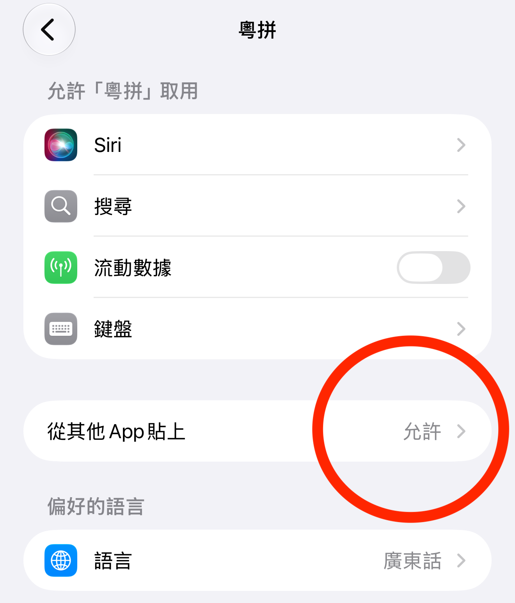

由于 iOS／iPadOS 系统限制，所有第三方输入法都无法使用外接键盘。
无论是 Magic Keyboard、Smart Keyboard，还是 Magic Keyboard Folio、Smart Keyboard Folio，或者其他外接键盘。
由于 iOS 系统限制，键盘需要 允许完全访问 权限，先可以提供振动（触感）回应。
去系统设置 App 开启 允许完全访问 权限给键盘之后。
还需要按键盘上方的齿轮按钮，进入设置页面，选择启用振动（触感）回应。
有时键盘出現问题，需要将它彻底重新启动。
到系统设置 App，将键盘的 允许完全访问 权限关闭、再开启。
系统就会将键盘重启。
有幾点需要注意：
请参考: Android 文字转语音朗读
用输入法时按 Control ⌃ + Shift ⇧ + `（位于 esc 键下方），会显示一个选项页面。
就可以选择简化字、标点符号样式等各种选项。
根据中华人民共和国国务院公布的《通用规范汉字表》，简化字（简体字／规范字）只存在「系」一种写法。
「爱」是清音影母字，当代粤语应当读零声母读音 oi3
「外」是浊音疑母字，当代粤语应当读疑母读音 ngoi6
現实中广州、香港等珠三角各地常有疑影不分，例如 我 读成 o5 ， 安 读成 ngon1
理论上可依照粤语声調区分疑影，零声母通常搭配陰調（1、2、3），疑母 ng- 通常搭配陽調（4、5、6）
粤语歌中的「爱」大多读 ngoi3，是因为香港影音娛乐行业推崇的「正音」其实不正，混有部分其他地方的发音偏好，也可能存在对懒音的矫枉过正。
/Library/Input Methods/ 目录。
由于 macOS 对输入法的管理情况比较复杂，粤拼输入法内建的「检查更新／自动更新」有可能会更新失败。
最简单、稳定、高效的更新方式，是直接到官网下载安装最新版。
请参考: 如何卸载 macOS 粤拼输入法
粤拼输入法没有任何后台活动（Background Activity）。
可能是系统将使用键盘的情况当作了后台活动。
请确保：

是因为你的装置缺少可以显示对应字符（字元）的字体。
如果是 iPhone、iPad 或 Android 装置，将系统更新至最新版本可能会有一些改善。
如果是 macOS，可以安装大字符集字体来解决。
建议安装以下 全部 幾款字体：